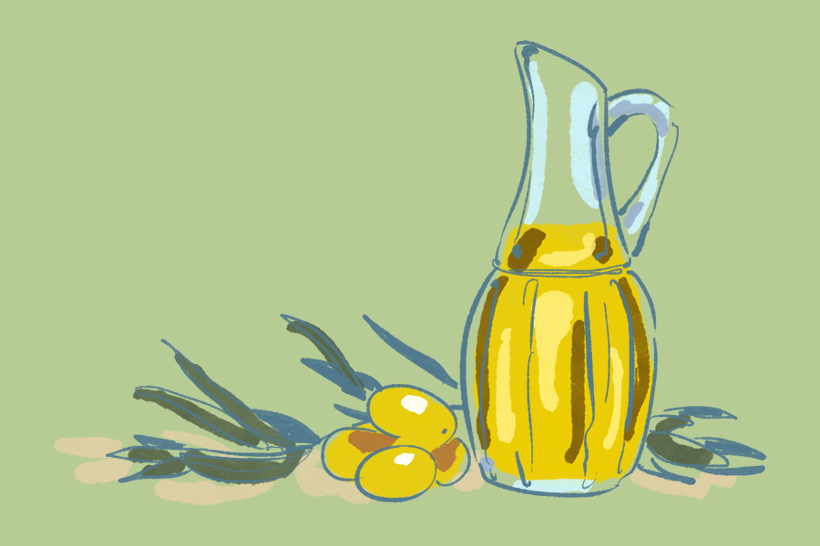

Berceau d'une tradition oléicole millénaire, la région des Baux-de-Provence abrite plus de 350 000 oliviers et une dizaine de moulins produisant des huiles AOP reconnues pour leur finesse, entre douceur herbacée et légère amertume. Le Domaine Jolibois, plus grande oliveraie privée de France avec 240 hectares cultivés en bio et en agroforesterie, incarne cet héritage. Engagé en agriculture régénérative, le domaine propose une visite du moulin, une présentation du projet agricole, et, en saison (octobre-novembre), un atelier de cueillette. La visite se conclut par une dégustation des cinq cuvées maison : trois huiles monovariétales (Grossane, Aglandau, Picholine), deux AOP Vallée des Baux-de-Provence (Fruité Vert et Olive Maturée), et un vinaigre balsamique artisanal.
Pour en savoir plus : domaine-jolibois.com